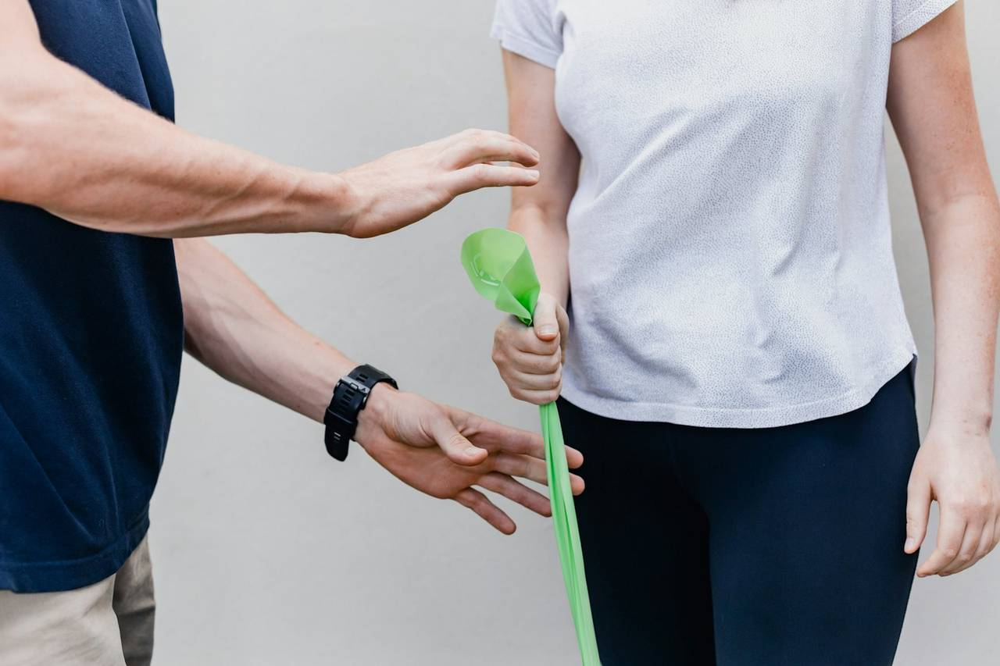

The Bachelor of Physiotherapy (BPT) at Rashmi College of Physiotherapy is a 5-year programme: four academic years on an annual pattern, followed by a one-year compulsory rotatory internship. It is affiliated to RGUHS, Bengaluru and follows the NCAHP Competency-Based Curriculum for Physiotherapy (2025). Where RGUHS or State regulations differ from the national curriculum, the University and State regulations prevail.
Curriculum background
Quality treatment is central to physiotherapy. It depends on a sound knowledge of the basic sciences and of how physiotherapy techniques and procedures interact. As technology and techniques grow more complex, the physiotherapist's role and responsibility keep growing. The BPT gives students the scientific and theoretical foundation of the profession and trains them to synthesise, evaluate and apply that knowledge in clinical settings.
The curriculum aims to produce physiotherapists who are:
- Technically and clinically competent to make independent decisions
- Competent to assess a patient
- Aware of patient conditions and treatment, and of the importance of quality assurance
- Grounded in the theory behind evidence-based practice
- Effective members of the multidisciplinary team
- Prepared to take part in, or start, research into practice
The curriculum was built by looking at every area of physiotherapy and at the roles expected of physiotherapists at different levels of experience, with the aim of connecting education with employment practice. A Foundation Course brings all students to the same understanding of basic healthcare norms before they begin. Clinical practice starts in the second year and continues as a rotation between theory and practice throughout the programme.
Programme outcomes
As an independent practitioner, an entry-level physiotherapy graduate will be able to:
- Provide quality care to individuals and populations to optimise their movement, function and quality of life.
- Examine, assess, evaluate, treat and prescribe physiotherapeutic management for diseases, disorders and trauma conditions.
- Promote health and use strategies based on the best available research evidence to prevent and minimise impairments, activity limitations and participation restrictions.
- Provide ethical care through high standards of professional practice.
- Communicate effectively to strengthen therapeutic and professional relationships.
- Prescribe and understand diagnostic imaging, electrophysiological, haematological and biochemistry investigations for diagnosis, treatment or referral to other healthcare professionals.
- Integrate the best available research evidence into clinical decision-making and practice.
- Show commitment to continuous learning and scholarly activity.
- Work effectively with the healthcare team to provide patient-centred care.
- Manage self, time, resources and priorities to deliver safe, effective and sustainable services.
- Demonstrate competence in quality assurance relevant to physiotherapy practice.
Learning objectives
By the end of the course, the student should be able to:
- Acquire the cognitive, affective and psychomotor skills needed to examine, evaluate, diagnose, plan, carry out and document physiotherapy treatment, independently or with the multidisciplinary team.
- Evaluate patients for impairments and functional limitations, and carry out all routine physiotherapeutic procedures based on that evaluation.
- Operate and maintain physiotherapy equipment, and plan and deliver treatment (both electrotherapy and exercise therapy) independently.
- Educate patients and caregivers about health promotion, disease and disorder prevention, and physiotherapeutic interventions.
- Demonstrate all the competencies needed to achieve the programme outcomes.
Professional roles developed
| Role / domain | Intended programme outcome |
|---|---|
| Clinician / Physiotherapy Practitioner | Quality care to optimise movement, function and quality of life; evidence-informed prevention and health promotion |
| Ethical and Professional Practitioner | Ethical care through high standards of professional practice |
| Communicator | Effective communication in therapeutic and professional relationships |
| Evidence-based Practitioner and Lifelong Learner | Integrating research evidence into practice; continuous learning and scholarly activity |
| Inter-professional Teamwork | Working effectively with the healthcare team in patient-centred care |
| Leader and Manager | Managing self, time, resources and priorities for safe, effective and sustainable services |
| Quality Assurance | Competence in quality policies, procedures, processes and standards |
Expectations from graduates
The handbook describes the future physiotherapy graduate as someone who:
- Is a competent, skilled and reflective practitioner who can work in many settings with patients of all ages, across the continuum of care from wellness and prevention to management of dysfunction, safely and within legal, ethical and professional standards.
- Uses critical inquiry and evidence-based practice to make the clinical decisions that autonomous practice requires.
- Takes an active part in professional and community organisations, and supports the advancement of community health.
- Shows a lifelong commitment to learning and professional development.
- Adopts and adapts innovation, technology, research and critical thinking to keep pace with advances in physiotherapy and related fields.
- Works as an active member of trans-disciplinary and multidisciplinary teams.
- Is entitled by the coursework to carry out independent physiotherapy assessment and treatment in any healthcare delivery centre in India.
- Is skilled in physical/functional diagnosis, treatment planning and management, delivery of physiotherapy treatment, and patient support.
- Can find employment in hospitals, nursing homes, sports teams, fitness centres, community rehabilitation, health planning boards and health promotion services, in the private and public sectors, and in independent physiotherapy clinics.
- Is encouraged to pursue further qualifications, keep up with recent advances, and earn continuing professional education credits.
What's new in the competency-based curriculum
The curriculum responds to a widely seen skill gap in healthcare. Traditional courses concentrated on what a student is expected to know, while employers expect graduates to perform. The competency-based curriculum links the two: "know what" and "do how".
Competency-based education
Focus on competencies, outcomes and performance rather than content alone. Teaching is learner-centred, assessment is continuous and formative, and the qualification depends on showing a defined set of competencies.
Self-directed learning
Students identify their learning needs, set goals, find resources and evaluate their own progress, alongside classroom teaching, preparing them for lifelong learning.
Credit-based system
Study hours are converted into credits under the National Credit Framework, following the UGC's Choice-Based Credit System approach: theory 1 credit = 15 hours; practical or clinical 1 credit = 30 hours; field work 1 credit = 45 hours.
Integrated curriculum
Vertical integration weaves clinical skills into the basic-science years; horizontal integration links subjects around shared clinical concepts. Basic sciences take the most time in Year 1 and steadily less later, as clinical learning becomes the focus.
Early clinical exposure
Clinical training begins in the first year with Clinic Orientation, and classes use case scenarios and case-based learning, with enough exposure to primary care.
Skills labs, simulation and digital learning
Skill centres with mannequins, laboratories and high-fidelity simulation, along with flipped classrooms, online and blended learning, and learning management systems.
The Foundation Course
An immersive orientation at the start of the programme that covers:
- The national health system and the basics of public health
- Medical ethics and medical terminology
- Communication skills, basic life support and computer skills
- Infection prevention and control
- Environmental issues and disaster management
- Community orientation, including gender sensitivity, disability, human rights and civil rights
Teaching modalities
| Teaching modality | Learning opportunities |
|---|---|
| Patients | Assessment of physical dysfunction, movement, gait, balance, posture and activity; applying physiotherapy modalities and therapeutic exercise; receiving feedback |
| Mannequins | Practising acquired techniques and basic procedural skills |
| Simulators | Teamwork and leadership; cardiac and pulmonary care skills; clinical problem solving |
| Task under supervision | Assessment, diagnosis, exercise therapy and electrotherapy; muscle strength and joint range measurement; joint mobilisation and manipulation; chest physiotherapy; posture, gait, balance and coordination |
Competency-based assessment
Students are assessed on knowledge, skills and attitudes using methods such as:
- OSCE: Objective Structured Clinical Examination
- OSPE: Objective Structured Practical Examination
- OSLER: Objective Structured Long Examination Record
- Mini-CEX: Mini Clinical Evaluation Exercise
- CbD: Case-based Discussion
- DOPS: Direct Observation of Procedural Skills
- Portfolio
- Multi-source feedback
- Patient satisfaction questionnaire
Examination rules, marks and grading are explained on the Examination & Evaluation page.
Teaching and learning methods
Teaching follows competency-based learning. Alongside classroom teaching (contact hours), self-learning is encouraged so that graduates become lifelong learners. Technology, hybrid or virtual learning, advanced learning tools, mannequins, simulators and videos may also be used to enrich learning. Practical skills are taught with the DOAP model: Demonstrate, Observe, Assist, Perform. English is the medium of instruction and examination.
- Lectures
- Tutorials
- Demonstrations using models (including digital)
- Flipped classes
- Dissection
- Panel discussions
- Field visits
- Case studies
- Debates
- Practical / lab work
- Video demonstrations
- Role play
- Hands-on training
- Virtual reality
- Simulation
- Case discussions

Year-by-year overview
Each academic year has a minimum of 1,560 teaching hours and ends in a University examination (BPT I to BPT IV). The full course-wise tables are on the Scheme of Study page.
Foundations of the body and of therapy
- Human Anatomy and Human Physiology
- Biochemistry
- Fundamentals of Exercise Modalities
- Fundamentals of Electro Physical Agents
- Psychology & Sociology; Healthcare Delivery System in India
- English and Information Technology
Clinical component: Clinic Orientation, 150 hours
First-year schemeCore physiotherapy skills
- Pathology & Microbiology; Pharmacology
- Exercise Therapy
- Electrotherapy
- Biomechanics & Kinesiology
- Emergency Care and Life Support Skills
- Public Health & Health Promotion; Yoga and Systems of Medicine
Clinical component: Clinical Observation, 210 hours
Second-year schemeClinical sciences and diagnosis
- General Medicine and Pediatrics; General Surgery; Orthopedics
- Physiotherapy in Medical and Surgical Conditions
- Physiotherapy in Orthopedic Conditions
- Physical & Functional Diagnosis & Prescription
- Research Methodology, Biostatistics and Evidence Based Practice
Clinical component: Clinical Education, 300 hours
Third-year schemeSpecialty practice and community
- Neurology, Psychiatry and Neurosurgery; PT in Neurological Conditions
- Cardiothoracic Diseases; PT in Cardiothoracic Conditions
- Sports Physiotherapy & Exercise Prescription
- Community Physiotherapy & Rehabilitation
- PT Ethics, Medico-Legal Aspects, Management; Project Work Orientation
Clinical component: Clinical Rotation, 390 hours
Fourth-year schemeCredits summary
Credits follow the National Credit Framework: 1 credit = 15 hours of theory, 30 hours of practical or clinical work, or 45 hours of field work. Marks and hours for every course are on the Scheme of Study page.
| Year | Courses | Total hours | Theory credits | Practical credits | Total credits |
|---|---|---|---|---|---|
| First Year | 10 | 1560 | 70 | 17 | 87 |
| Second Year | 9 | 1560 | 64 | 20 | 84 |
| Third Year | 8 | 1560 | 58 | 23 | 81 |
| Fourth Year | 9 | 1560 | 60 | 22 | 82 |
| Total (4 academic years) | 36 | 6240 | 252 | 82 | 334 |
| Internship (5th year) | – | Minimum 2016 | – | – | Recorded on transcript |
Clinical components
Clinical learning grows year by year, from orientation visits to independent practice in the internship.
Year 1: Clinic Orientation (BPT-110), 150 hours
Part of the foundation course. Students visit the whole chain of healthcare delivery, from the Sub-centre, PHC and CHC to district hospitals, medical colleges and private hospitals and clinics, and meet the village panchayat and front-line health workers.
Year 2: Clinical Observation (BPT-209), 210 hours
Rotating postings in physiotherapy OPDs and hospital wards, where students observe patient care and keep a case portfolio or diary.
Year 3: Clinical Education (BPT-308), 300 hours
Supervised training in wards and OPDs. Critique enquiry, case presentation and case discussion become a regular part of clinical education from the third year onwards.
Year 4: Clinical Rotation (BPT-409), 390 hours
Supervised rotation through ten areas, from the physiotherapy OPD and ICUs to community PHCs, old age homes and industrial visits, learning bedside approach, assessment, special tests, treatment dosage and outcome measures. Community Physiotherapy practicals add field visits, mobile camps and disability surveys. See the rotation areas.
Year 5: Rotatory Clinical Internship, minimum 2,016 hours
Twelve months of full-time supervised practice across ten departments, including a two-month rural posting. Internship details.
Skill-based outcomes
The handbook defines the competencies every graduate must demonstrate, with monitorable indicators for each. Competencies are taught and assessed at five levels:
- K: Knows (describe, define)
- KH: Knows How (explain, analyse, identify, recognise)
- S: Shows (demonstrate)
- SH: Shows How (demonstrate)
- P: Performs independently (perform)
Assessment methods include MCQs, assignments, short and long essays, spotters, viva voce, presentations and debates, along with OSCE/OSPE, DOPS and case presentations in practical exams. The 19 competency statements are summarised below.
Assessment and diagnosis (competencies 1–4)
- Consults the client about health, history, previous interventions and outcomes: builds rapport, takes a relevant history, collects information from records, other practitioners and family, and interprets verbal and non-verbal responses.
- Collects assessment data relevant to the client's needs: explains the nature, purpose and risks of the assessment, performs it safely with consent, and responds to significant changes.
- Conducts patient evaluation and assessment: higher motor functions, cranial nerves, ROM, MMT, tone, sensation, balance, coordination, hand function, cardio-respiratory status, posture and gait, special tests and standardised outcome measures.
- Analyses findings to reach a physiotherapy diagnosis and prognosis: identifies impairments and barriers, reaches a differential diagnosis, makes evidence-based decisions and discusses them with the patient and caregivers.
Planning and delivering treatment (competencies 5–9)
- Develops and recommends an intervention strategy: sets SMART goals with the patient, chooses evidence-based interventions, discusses the case with the team, and refers on when physiotherapy is not indicated.
- Prepares the patient and the equipment, physically and emotionally, as per the treatment plan, operating the most appropriate equipment within the protocol.
- Implements the intervention safely, effectively and with consent, orients the client to the service, and educates on health promotion and self-management.
- Explains treatment plans and teaches self-exercises, identifying comorbidities and adverse reactions and checking the patient's general condition before exercise.
- Advises on nutrition, exercise, rest and relaxation, and assesses status after exercise and diet.
Evaluation and documentation (competencies 10–11)
- Evaluates the effectiveness of interventions: monitors responses, uses outcome measures, redefines goals, compares discharge status with the initial assessment and recommends self-management.
- Completes accurate treatment documentation that meets ethical and legal requirements, with legible, accurate, timely and accessible records.
Communication and teamwork (competencies 12–13)
- Builds rapport, trust and ethical professional relationships through effective communication, basic counselling, sensitivity and good listening.
- Maintains inter-professional relationships for client-centred collaboration, sharing information in good time and practising within legislation and ethical guidelines.
Quality (competencies 14–15)
- Understands continuous quality improvement: quality plans, accreditation and audit, peer review and self-evaluation, and contributing to in-service activities.
- Carries out daily/weekly Quality Control (QC) checks, explaining QMS, QA and QC and performing daily, weekly and monthly QC procedures.
Research and information sharing (competencies 16–19)
- Reviews the literature: defines search terms, finds relevant literature and identifies research gaps.
- Suggests implementation of research findings, evaluating research against current departmental practice.
- Suggests or starts physiotherapy research topics: formulates a research question and follows the steps of preparing and conducting research.
- Interprets, applies and shares information as a member of the physiotherapy team, communicating correct, relevant and appropriate information.
Join the BPT at RCP
40 seats for 2026–27. Check your eligibility and talk to our admission desk.